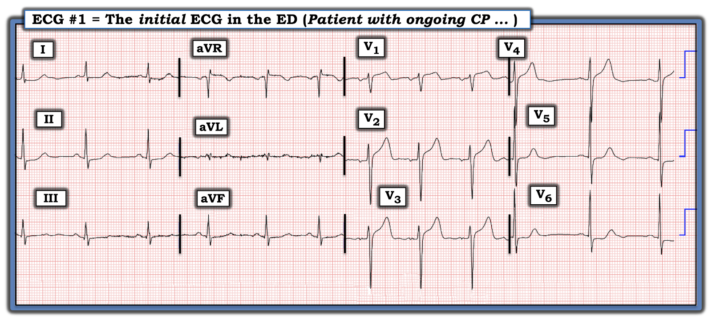
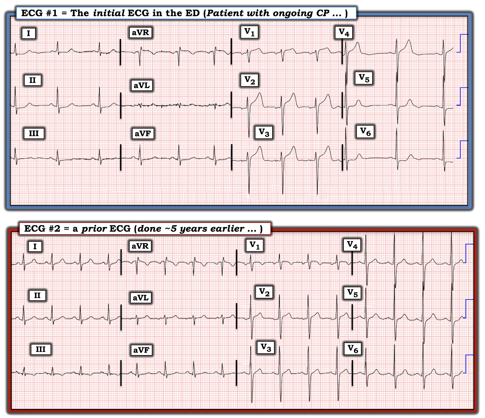
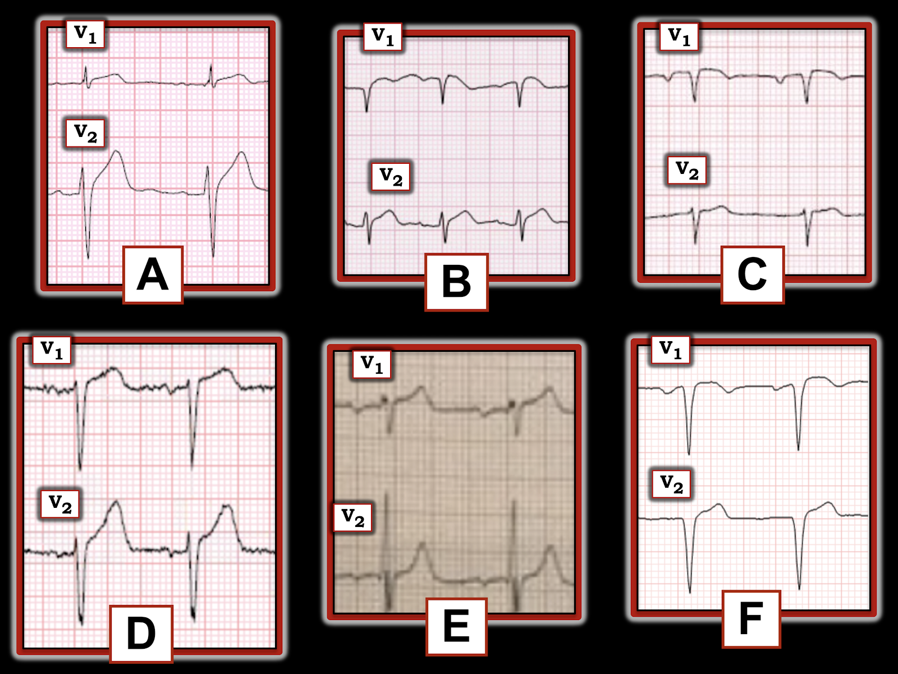
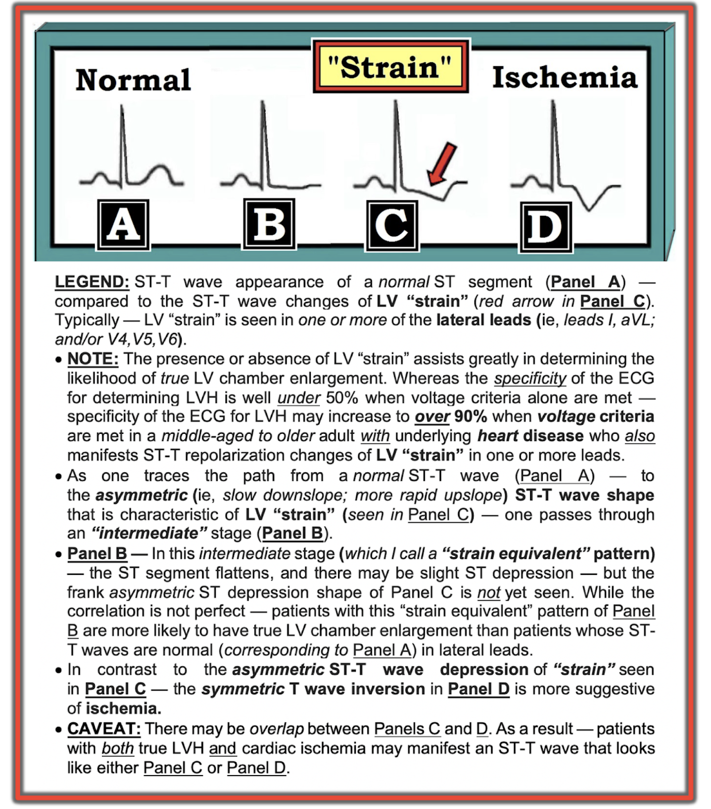
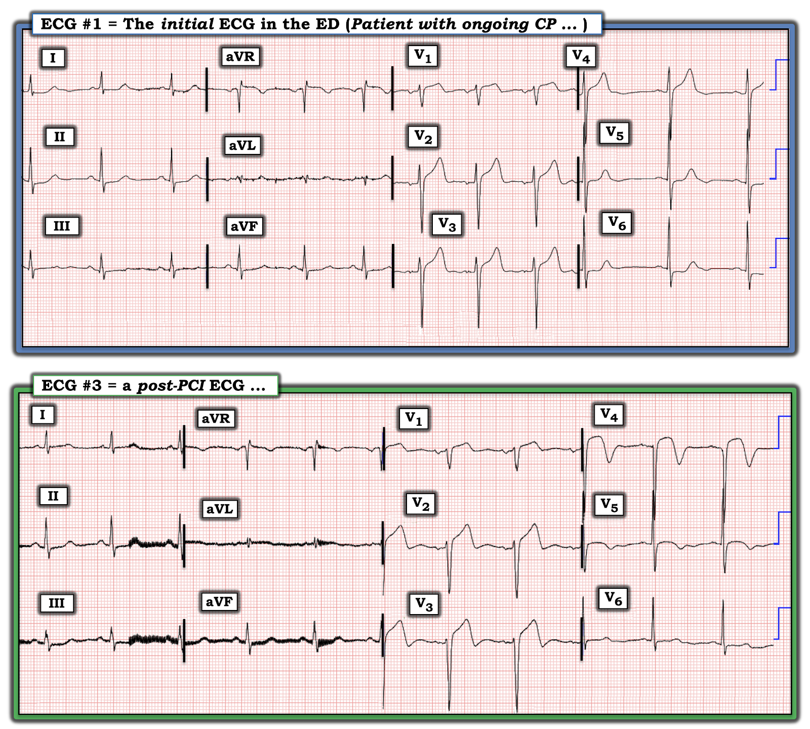
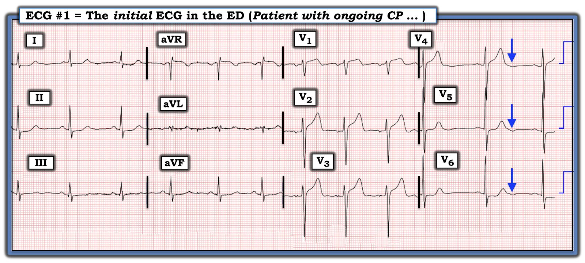

ECG Blog #380 — "Xoáy" (Swirl) là gì?
Điện tâm đồ ở Hình 1 — được ghi ở một phụ nữ lớn tuổi bị CP (đau ngực — Chest Pain) kéo dài suốt ngày hôm trước. Triệu chứng giảm sau khi dùng Nitroglycerin — nên quyết định được đưa ra là không kích hoạt phòng thông tim (cath lab). BẠN có đồng ý với quyết định này không?


SUY NGHĨ CỦA TÔI về điện tâm đồ ở Hình 1:
Ở một bệnh nhân bị CP kéo dài suốt ngày hôm trước (cho tới khi được dùng Nitroglycerin) — điện tâm đồ ban đầu ở Hình 1 là cực kỳ đáng lo ngại.
- Nhịp xoang. Các khoảng (PR, QRS và QTc) và trục mặt phẳng trán bình thường.
- Tiêu chuẩn điện thế của LVH được thỏa — ít nhất là theo Tiêu chuẩn Peguero (Tổng sóng S sâu nhất ở bất kỳ chuyển đạo trước tim nào + S ở V4 ≥23 mm ở nữ — như đã bàn trong ECG Blog #73).
Về Thay đổi sóng Q-R-S-T:
- Sóng Q — Không thấy.
- Tăng tiến sóng R — Vùng chuyển tiếp (nơi sóng R trở nên cao hơn độ sâu của sóng S) hơi muộn, nằm giữa chuyển đạo V4 và V5. Dù vậy — biên độ sóng R ở mức hợp lý ở tất cả các chuyển đạo phía trước (sóng R giảm nhẹ từ V2 sang V3 có lẽ là do vị trí đặt điện cực).
Những bất thường quan trọng nhất liên quan đến Thay đổi sóng ST-T:
- Ở các chuyển đạo chi — Có sóng ST-T dẹt không đặc hiệu, kèm ST chênh xuống nhẹ ở nhiều chuyển đạo (tức là ở các chuyển đạo I,II,III,aVF).
- Ở các chuyển đạo trước tim — Việc đánh giá ST chênh lên ở các chuyển đạo phía trước đặc biệt khó ở điện tâm đồ #1. Lý do là bình thường vẫn có một chút ST chênh lên dốc lên ở chuyển đạo V2 và V3. Dù vậy — ở một bệnh nhân bị CP, mức độ ST chênh lên ở chuyển đạo V2 và V3 theo tôi là quá mức, đi kèm các sóng ST-T trông có khả năng là tối cấp. Như vậy, dù thỏa tiêu chuẩn điện thế của LVH — khi xét độ sâu của sóng S ở chuyển đạo V2,V3 — sóng ST-T ở các chuyển đạo này vẫn trông hơi cao hơn, đỉnh đầy đặn hơn và đáy rộng hơn so với tôi dự đoán.
- Bằng chứng ủng hộ rằng sóng ST-T ở chuyển đạo V2,V3 nhiều khả năng bất thường — đến từ hình dạng sóng ST-T ở chuyển đạo V1. Khi không có sóng S sâu ở chuyển đạo V1 — hiếm khi thấy ST chênh lên ở chuyển đạo này. Đơn giản là không bình thường khi thấy ST chênh lên trọn 1 mm ở chuyển đạo V1 (như chúng ta thấy ở Hình 1) — nhất là khi xét tới hiện tượng đoạn ST thẳng đuỗn có ở chuyển đạo này.
- ĐIỂM THEN CHỐT (PEARL) #1: Các dấu hiệu nêu trên ở chuyển đạo V1,V2,V3 là kín đáo! Chính vì vậy mà tôi muốn nhấn mạnh rằng chuyển đạo duy nhất ở điện tâm đồ #1 biểu hiện sóng ST-T bất thường không thể chối cãi là chuyển đạo V6. Ở một bệnh nhân bị CP mới xuất hiện và kéo dài — mức ST chênh xuống dạng phẳng như ở chuyển đạo V6 không bao giờ là bình thường. Đoạn ST dẹt và chênh xuống bất thường cũng thấy ở chuyển đạo V5 kế cận, nhưng không rõ rệt bằng ở chuyển đạo V6.
- Điểm MẤU CHỐT: Chính vì tôi biết rằng ST chênh xuống dạng phẳng ở chuyển đạo V6 là bất thường ở một bệnh nhân bị CP kéo dài — nên tôi hiểu rằng sóng ST-T ở chuyển đạo V1,2,3 cũng phải được coi là bất thường cho tới khi chứng minh được điều ngược lại!
ĐIỀU CỐT LÕI: Bệnh nhân trong ca hôm nay là một phụ nữ lớn tuổi đến khám vì CP mới xuất hiện và kéo dài 1 ngày. Điện tâm đồ ban đầu của bà nên được đọc là rất gợi ý tắc cấp đoạn gần LAD cho tới khi chứng minh được điều ngược lại.
- Khái niệm MỚI: Ở một bệnh nhân bị CP — các dấu hiệu điện tâm đồ gồm ST chênh lên ở các chuyển đạo phía trước, kèm ST chênh xuống ở các chuyển đạo trước tim phía bên — phù hợp với hình ảnh xoáy trước tim (Precordial "Swirl") (mà tôi bàn ở dưới).
Tiếp tục CA BỆNH hôm nay:
Đã tìm được một điện tâm đồ trước đây của bệnh nhân (ghi khoảng ~5 năm trước) — được trình bày để so sánh với điện tâm đồ ban đầu ở Hình 2.
- Bản ghi cũ này có củng cố nhận định của chúng ta về điện tâm đồ ban đầu của bệnh nhân không?


So sánh điện tâm đồ #1 và điện tâm đồ #2:
NẾU còn chút nghi ngờ nào về việc các dấu hiệu trên bản ghi hôm nay (tức là ở điện tâm đồ #1) có phải là cấp tính hay không — thì nghi ngờ đó lẽ ra đã tan biến ngay khi tìm được điện tâm đồ trước đây ở Hình 2!
- LƯU Ý: Điều quan trọng là phải đối chiếu hoàn cảnh đang diễn ra vào thời điểm ghi bản ghi trước đó (tức là, Khi ghi điện tâm đồ cũ, bệnh nhân ổn định và không triệu chứng — hay đang bị đau ngực, đợt cấp suy tim, hoặc một quá trình nào khác đang diễn ra?). Điểm này đặc biệt đáng lưu ý với điện tâm đồ #2 — vì bản ghi cũ này có nhịp nhanh xoang. Ngoài ra — các lực trước vách trên bản ghi cũ này nổi trội hơn (tức là, dưới dạng sóng R = sóng S ở chuyển đạo V1, với các phức bộ QRS đẳng pha trông tương tự ở chuyển đạo V2 đến V5).
- Dù vậy — trước đây không có dấu hiệu nào của ST chênh lên, hay của sóng ST-T có khả năng tối cấp ở các chuyển đạo phía trước của điện tâm đồ #2 — cũng không có ST chênh xuống dạng phẳng rõ rệt ở chuyển đạo V6 trên điện tâm đồ cũ này! Những khác biệt này giữa 2 bản ghi ở Hình 1 ủng hộ mạnh mẽ nghi ngờ của chúng ta rằng các thay đổi sóng ST-T ở điện tâm đồ #1 phải được xem là cấp tính cho tới khi chứng minh được điều ngược lại!
=================================
Xoáy trước tim (Swirl) là gì?
Trong bài ngày 15 tháng 10 năm 2022 trên Dr. Smith's ECG Blog — BS. Smith và Meyers giới thiệu thuật ngữ giàu hình ảnh là xoáy trước tim (Precordial Swirl) — như một dấu hiệu điện tâm đồ thú vị giúp nhận ra một hình ảnh điện tâm đồ đặc trưng, gợi ý mạnh mẽ tắc cấp LAD (thường ở trước nhánh xuyên vách thứ 1) tại vị trí rất gần — gây ra thiếu máu cục bộ vách, bên cạnh tổn thương thành trước và mỏm tim.
ĐIỂM THEN CHỐT (PEARL) #2: Trong bối cảnh OMI do LAD (nhồi máu cơ tim do tắc — Occlusion-based MI ) cấp — hình ảnh xoáy trước tim được nhận ra khi thấy ST chênh lên ở chuyển đạo V1 và aVR — và — ST chênh xuống soi gương ở chuyển đạo V5 và V6.
- Khi cân nhắc xoáy trước tim — tôi thích tập trung vào hình dạng sóng ST-T ở chuyển đạo V1 và V6.
- Mặc dù ST chênh lên dốc lên 1-2 mm thường gặp (và là bình thường) ở các chuyển đạo phía trước V2 và V3 — phần lớn trường hợp chúng ta không thấy ST chênh lên ở chuyển đạo V1 (hoặc nếu có — thì rất ít!). Vì vậy — tôi lập tức nghi ngờ "xoáy trước tim" mỗi khi có gợi ý OMI do LAD — và — thêm vào đó, chuyển đạo V1 trông khác với dự kiến!
- LƯU Ý: Đôi khi việc nhận ra chuyển đạo V1 trông "khác-với-dự-kiến" — chỉ đến sau khi nhận thấy chuyển đạo V2 rõ ràng bất thường.
Ở Hình 3 — tôi đã chọn 6 cặp chuyển đạo V1,V2 từ loạt bản ghi mà BS. Smith và Meyers trình bày trong bài ngày 15 tháng 10 năm 2022 về xoáy trước tim.
- Tuy phải thừa nhận là kín đáo — đoạn ST dạng vòm (coving) với ST chênh lên nhẹ nhưng không tương xứng ở chuyển đạo V1 của A, B và C ở Hình 3 rõ ràng là hình dạng bất thường của đoạn ST ở chuyển đạo V1. Khi đi kèm các chuyển đạo trước tim kế cận gợi ý OMI cấp do LAD — bức tranh này nên khiến ta nghi ngờ xoáy trước tim.
- Ví dụ F ở Hình 3 kín đáo hơn — vì sóng S ở chuyển đạo V1 sâu hơn. Dù vậy — hình dạng vòm của ST chênh lên ở chuyển đạo V1 của F vẫn nên khiến ta nghi ngờ ở một bệnh nhân có triệu chứng mới.
- Đoạn sóng ST-T ở chuyển đạo V1 của ví dụ D — rất giống "hình dạng" tăng gánh thất trái ở một chuyển đạo phía trước của bệnh nhân LVH. Tuy nhiên, sóng S ở ví dụ D — hoàn toàn không sâu ở cả chuyển đạo V1 lẫn V2 — điều mà ở một bệnh nhân đau ngực nên gợi ý mạnh khả năng xoáy trước tim.
- Hình dạng sóng ST-T ở chuyển đạo V1 của ví dụ E cũng có vẻ bất thường một cách kín đáo. Bằng chứng ủng hộ dấu hiệu này là thật — đến từ nhận định của chúng ta rằng sóng T ở chuyển đạo V2 kế cận trông nhọn hơn dự kiến — điều mà ở một bệnh nhân có triệu chứng mới, nên củng cố nghi ngờ về một sóng T dương không tương xứng ở chuyển đạo V1.


LƯU Ý: Rất DỄ bị LVH đánh lừa! Lý do là "tăng gánh" thất trái trong LVH đôi khi biểu hiện rõ ở các chuyển đạo trước tim phía trước hơn là phía bên — khi đó có thể có ST chênh lên ở các chuyển đạo phía trước (tức là hình soi gương của sóng ST-T chênh xuống ở các chuyển đạo bên). Bệnh sử và sóng S sâu đi kèm ở các chuyển đạo phía trước (tức là hình soi gương của sóng R cao ở các chuyển đạo bên) sẽ gợi ý LVH hơn là xoáy trước tim (Xem ECG Blog #254 và Bình luận của tôi ở cuối trang trong các bài ngày 6 tháng 2 năm 2020 và 20 tháng 6 năm 2020 trên Dr. Smith's ECG Blog).
- Để xem thêm các ví dụ minh họa khái niệm "tính tương xứng" (proportionality) (liên quan đến kích thước tương đối của độ lệch sóng ST-T so với biên độ QRS ở chuyển đạo tương ứng) — Hãy xem thêm các ví dụ LVH giả xoáy trước tim được trình bày trong bài ngày 15 tháng 10 năm 2022 trên Dr. Smith's ECG Blog.
Hình ảnh xoáy trước tim ở chuyển đạo V6:
Thành phần cuối cùng để chẩn đoán xoáy trước tim — là thấy ST chênh xuống soi gương ít nhất ở chuyển đạo V6 (nếu không phải cả ở chuyển đạo V5):
- Khi tôi đã xác định bản ghi đang xem không phải là một ví dụ LVH giả xoáy trước tim — tôi tập trung sự chú ý vào hình dạng sóng ST-T ở chuyển đạo V6.
- Tôi đã nhiều lần điểm lại cách tiếp cận của mình với chẩn đoán điện tâm đồ LVH (Xem ECG Blog #245 — cùng nhiều bài khác). Ở Hình 4 — tôi đã sao lại từ bài ngày 20 tháng 6 năm 2020 nêu trên hình vẽ sơ đồ của tôi về hình dạng sóng ST-T có thể thấy ở một hoặc nhiều chuyển đạo bên khi có "tăng gánh" thất trái (LV strain).
ĐIỂM THEN CHỐT (PEARL) #3: Nhìn chung, hình dạng sóng ST-T chênh xuống ở chuyển đạo V6 trong xoáy trước tim không giống C hay D ở Hình 4. Thay vào đó — đoạn ST chênh xuống có xu hướng phẳng hơn. Vì vậy — hãy NGHĨ TỚI xoáy trước tim ở một bệnh nhân có triệu chứng mới NẾU bạn thấy:
- Các dấu hiệu khác gợi ý OMI cấp do LAD.
- Sóng ST-T ở chuyển đạo V1 trông "khác-với-dự-kiến".
- Đoạn ST chênh xuống có dạng tương đối dẹt ít nhất ở chuyển đạo V6 (nếu không phải cả ở chuyển đạo V5).


DIỄN TIẾN CỦA CA BỆNH:
Bệnh nhân hôm nay đã được thông tim — và phát hiện tắc hoàn toàn đoạn gần LAD.
- Ở Hình 5 — tôi so sánh điện tâm đồ sau PCI với bản ghi ban đầu trong ca hôm nay.
CÂU HỎI CUỐI:
- BẠN sẽ đọc bản ghi sau PCI như thế nào?
- Dựa trên các điện tâm đồ ở Hình 5 — PCI có mở thông được động mạch "thủ phạm" không?


Diễn giải điện tâm đồ sau PCI:
Có nhiễu đường nền đáng kể ở các chuyển đạo chi của điện tâm đồ #3. Dù có nhiễu — bản ghi này vẫn đọc được.
- Trục mặt phẳng trán ở cả hai điện tâm đồ trong Hình 5 tương tự nhau — nghĩa là việc so sánh từng chuyển đạo với nhau sẽ có giá trị. Không có thay đổi cấp tính nào về hình dạng sóng ST-T ở các chuyển đạo chi .
Ngược lại — các chuyển đạo trước tim cho thấy nhồi máu cơ tim thành trước (MI) của bệnh nhân đã có tiến triển rõ rệt:
- Đã có sự mất các lực sóng R phía trước đáng kể ở điện tâm đồ #3 so với điện tâm đồ ban đầu. Cụ thể — sóng R ở chuyển đạo V2 nay nhỏ hơn — sóng R mất thêm từ V2 sang V3 — và sóng R ban đầu ở chuyển đạo V4 biến mất (tạo thành phức bộ QS ở chuyển đạo này). Sự mất lực phía trước này phù hợp với tổn thương cơ tim do nhồi máu diện rộng.
- ĐIỂM THEN CHỐT (PEARL) #4: Lưu ý sự thay đổi (sâu thêm) của sóng S ở chuyển đạo V3,V4 trên điện tâm đồ #3. Đây không phải là dấu hiệu LVH — mà là hậu quả của mất lực phía trước, khiến các lực phía sau nay “không bị đối trọng” (dẫn đến sóng S ở các chuyển đạo phía trước sâu hơn).
- ĐIỂM MẤU CHỐT: Nên biết rằng biên độ QRS có thể trải qua những thay đổi biên độ khó dự đoán trong quá trình tiến triển của nhồi máu cơ tim cấp.
Các chuyển đạo trước tim cũng cho thấy thay đổi rõ rệt về hình dạng sóng ST-T:
- So với điện tâm đồ #1 — rõ ràng có ST chênh lên nhiều hơn ở chuyển đạo V2,V3 của điện tâm đồ #3 — kèm ST chênh lên mới xuất hiện ở chuyển đạo V4.
- Dù vậy — một thay đổi về hình dạng sóng ST-T còn nổi bật hơn — là nhánh xuống của sóng T đổ dốc rất đứng ở chuyển đạo V2,V3,V4!
- ĐIỂM THEN CHỐT (PEARL) #5: Điều quan trọng là cần hiểu rằng mặc dù hình ảnh sóng T đổ dốc đứng này trông giống các sóng T ở chuyển đạo phía trước trong hội chứng Wellens — đây không phải là hội chứng Wellens, vì nhồi máu đã xảy ra (trong khi hội chứng Wellens xảy ra khi không có CP — và là một dấu hiệu cảnh báo trên điện tâm đồ xuất hiện trước khi xảy ra nhồi máu diện rộng với sóng QS — như đã bàn trong ECG Blog #254).
- Cuối cùng — hình dạng sóng ST-T ở chuyển đạo V5,V6 của bản ghi sau PCI ( = điện tâm đồ #3) — rất khác so với điện tâm đồ ban đầu. Thay vì đoạn ST dẹt và chênh xuống (như đã thấy ở điện tâm đồ #1 ) — nay có đoạn ST dạng vòm ở chuyển đạo V5 (nối tiếp đoạn ST dạng vòm thấy ở chuyển đạo V4 kế cận, dù không có ST chênh lên) — và không còn ST chênh xuống ở chuyển đạo V6.
ĐIỂM THEN CHỐT (PEARL) #6: Một trong những bài học MẤU CHỐT của ca hôm nay — là tầm quan trọng của việc đối chiếu các dấu hiệu điện tâm đồ với bệnh cảnh lâm sàng. Càng ghi nhiều bản ghi liên tiếp (và càng ghi chú kỹ mỗi bản ghi có kèm đau ngực hay không — và nếu có, mức độ CP tương đối ra sao) — thì việc đối chiếu các diễn biến lâm sàng càng trở nên dễ dàng.
- Ví dụ — Bình thường chúng ta không mong đợi thấy ST chênh lên nhiều hơn sau PCI (như chúng ta thấy ở điện tâm đồ #3) — trừ khi thủ thuật không tái tưới máu thành công động mạch "thủ phạm" — hoặc — trừ khi các điện tâm đồ bổ sung ghi trước PCI cho thấy ST đã chênh lên thêm trước khi nong mạch mở thông mạch bị tắc. Trong ca hôm nay — có lẽ khả năng sau là điều đã xảy ra — khi đó (giả định không còn CP sau PCI) — sóng T đổ dốc đứng kèm sóng T đảo ngược sâu dần ở các chuyển đạo trước tim phía trước của điện tâm đồ #3 có lẽ phản ánh tái tưới máu mạch vành.
==================================
Lời cảm ơn: Xin cảm ơn Kim Jiwon (Seoul, Hàn Quốc) đã chia sẻ ca bệnh và bản ghi này.
==================================

Các bài ECG Blog liên quan đến ca hôm nay:
- ECG Blog #205 — Điểm lại Cách tiếp cận hệ thống của tôi khi đọc điện tâm đồ 12 chuyển đạo.
- ECG Blog #193 — minh họa cách dùng nghiệm pháp soi gương (Mirror Test) để giúp nhận ra nhồi máu cơ tim thành sau cấp. Bài này điểm lại những điều cơ bản để dự đoán động mạch "thủ phạm" — cũng như tầm quan trọng của thuật ngữ "OMI" ( = nhồi máu cơ tim do tắc — Occlusion-based MI) như một bước tiến so với mô hình STEMI đã lỗi thời.
- ECG Blog #367 — thêm một ví dụ về OMI cấp do LCx.
- ECG Blog #294 — Làm sao biết NẾU động mạch "thủ phạm" đã được tái tưới máu.
- ECG Blog #194 — AIVR như một dấu hiệu cho thấy động mạch "thủ phạm" đã được tái tưới máu.
- ECG Blog #260 và ECG Blog #292 — Điểm lại khi nào một sóng T là tối cấp — và khái niệm thay đổi sóng ST-T "động" (dynamic).
- ECG Blog #230 — Cách so sánh các điện tâm đồ liên tiếp.
- ECG Blog #254 — Hội chứng Wellens là gì và không phải là gì ...
- ECG Blog #337 — một ca OMI bị chẩn đoán nhầm là NSTEMI ...
- ECG Blog #285 — thêm một ví dụ về nhồi máu cơ tim thành sau cấp (với nghiệm pháp soi gương (Mirror Test) dương tính).
- ECG Blog #246 — thêm một ví dụ về nhồi máu cơ tim thành sau cấp (với nghiệm pháp soi gương (Mirror Test) dương tính).
- ECG Blog #80 — điểm lại cách dự đoán động mạch "thủ phạm" (kèm một ca khác minh họa nghiệm pháp soi gương (Mirror Test) để chẩn đoán nhồi máu cơ tim thành sau cấp).
- ECG Blog #184 — minh họa mối quan hệ đối nghịch dạng soi gương "kỳ diệu" khi thiếu máu cục bộ cấp giữa chuyển đạo III và chuyển đạo aVL (được trình bày trong Audio Pearl #2 của bài này).
- ECG Blog #167 — thêm một ca về mối quan hệ đối nghịch dạng soi gương "kỳ diệu" giữa chuyển đạo III và chuyển đạo aVL giúp xác nhận OMI cấp.
- ECG Blog #350 — về mất cân đối sóng T (T Wave Imbalance) ở các chuyển đạo trước tim.
- ECG Blog #271 — Điểm lại cách xác định đường nền của đoạn ST (kèm bàn luận về thực thể thiếu máu cục bộ dưới nội tâm mạc lan tỏa).
- ECG Blog #258 — Cách "định tuổi" một ổ nhồi máu dựa trên điện tâm đồ ban đầu.
- Tầm quan trọng của mô hình OMI (so với mô hình STEMI cũ) mới — Xem Bình luận của tôi trong bài ngày 31 tháng 7 năm 2020 trên Dr. Smith's ECG Blog.
- 20 ca xoáy trước tim (hoặc "trông giống" ) — Được điểm lại trong bài ngày 15 tháng 10 năm 2022 trên Dr. Smith's ECG Blog (bao gồm Bình luận của tôi ở cuối trang).
=============================
PHẦN BỔ SUNG (ngày 24 tháng 5 năm 2023):
Josep Serra Tarragon đã viết thư hỏi tôi liệu có sóng U đảo ngược ở các chuyển đạo trước tim phía bên của điện tâm đồ #1 hay không. Khi xem lại — tôi phải đồng ý với ông rằng có! (Các mũi tên XANH ở chuyển đạo V4,V5,V6 — ở Hình 6).
- Có 2 phức bộ QRS ở các chuyển đạo V4,V5,V6 ghi đồng thời, trong đó ta thấy được sóng ST-T. Tôi không thấy rõ sóng U đảo ngược ở phức bộ QRS đầu tiên — nhưng các mũi tên XANH mà tôi vẽ vào Hình 6 chắc chắn phù hợp với sóng U đảo ngược ở phức bộ QRS thứ 2.
- Sóng U đảo ngược là một hiện tượng ít gặp, thường bị bỏ qua. Dù vậy — khi xuất hiện trong bối cảnh lâm sàng phù hợp, chúng là một dấu chỉ của thiếu máu cục bộ đáng kể (Correale và cs. — Clin. Cardiol 27:674-677, 2004).
- Người đầu tiên lưu ý tôi về sóng U âm là BS. Barney Marriott vào giữa thập niên 1980. Sau đó — tôi đã tìm sóng U âm trong nhiều năm liền, nhưng rất hiếm khi thấy. Phần lớn thời gian, đơn giản là có quá nhiều "nhiễu" trên bản ghi để chắc chắn chúng có mặt — hoặc tần số tim khiến khó phân biệt đâu là sóng U đảo ngược "thật" với phần cuối sóng ST-T, dao động đường nền, hay sóng P kế tiếp.
- Cơ chế của sóng U đảo ngược vẫn chưa rõ. Giả thuyết hợp lý nhất là tái cực chậm của hệ His-Purkinje.
- ĐIỀU CỐT LÕI: Bối cảnh lâm sàng trong Blog #380 này chắc chắn phù hợp với thiếu máu cục bộ. Tôi tin BS. Tarragon đúng khi cho rằng điều này được làm nổi bật bởi các mũi tên XANH ở Hình 6.
- Xin CẢM ƠN BS. Tarragon đã chỉ ra điều này!

